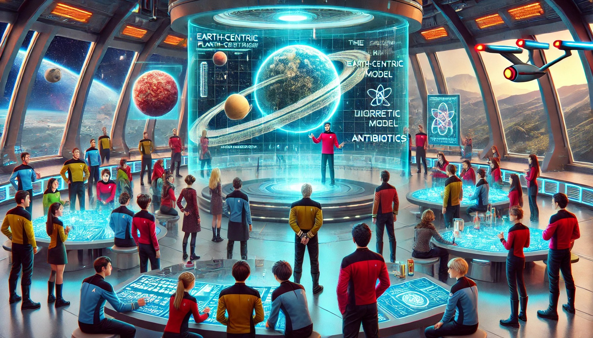

Ingreso en la flota estelar
Prueba 1
¡Bienvenidos, futuros exploradores de la ciencia!
En la Academia Estelar, sabemos que el conocimiento es el combustible que impulsa nuestro viaje hacia las estrellas. Pero, para ser verdaderos científicos, primero debemos tener una comprensión clara y precisa de nuestro mundo y del universo que nos rodea. Hoy enfrentaremos un desafío crucial: identificar y corregir los errores científicos más comunes que se encuentran en nuestra sociedad.
¿Sabías que muchas personas aún creen que el Sol gira alrededor de la Tierra, o que los antibióticos pueden destruir virus? Estos errores no son solo datos incorrectos; son barreras que nos impiden avanzar como sociedad, que afectan la toma de decisiones y que distorsionan nuestra percepción de la ciencia. Tu misión en esta prueba es ser un detective del conocimiento: escuchar atentamente, detectar los errores, comprender sus consecuencias y corregirlos con la verdad científica.
Prueba 2
Bienvenidos a una nueva aventura en el vasto universo de la exploración espacial!
Desde que la humanidad miró hacia las estrellas, hemos soñado con explorar los misterios del cosmos. Este viaje comenzó hace más de medio siglo con el lanzamiento del Sputnik, el primer satélite artificial que orbitó la Tierra, marcando el inicio de la era espacial. Desde entonces, nuestra curiosidad y sed de conocimiento nos han llevado más lejos de lo que jamás imaginamos: desde las huellas humanas en la superficie lunar con las misiones Apolo, hasta las sorprendentes imágenes de los confines del sistema solar capturadas por las sondas Voyager.
Hoy, ustedes se convertirán en exploradores espaciales modernos. En esta actividad, no solo aprenderán sobre estos hitos en la historia de la exploración espacial, sino que también descubrirán cómo la innovación y la tecnología nos han permitido alcanzar nuevos horizontes. Además, explorarán las contribuciones cruciales de centros de investigación y observatorios aquí en Andalucía, que han ayudado a abrir el camino para futuras generaciones de exploradores.
A lo largo de esta actividad, se les desafiará a pensar como científicos y ingenieros espaciales. Evaluarán avances tecnológicos, analizarán misiones históricas, y explorarán cómo cada paso que hemos dado en el espacio ha sido posible gracias a la curiosidad, la innovación y el esfuerzo colaborativo de personas como ustedes.
Así que, ¡Adelante, futuros exploradores de las estrellas!